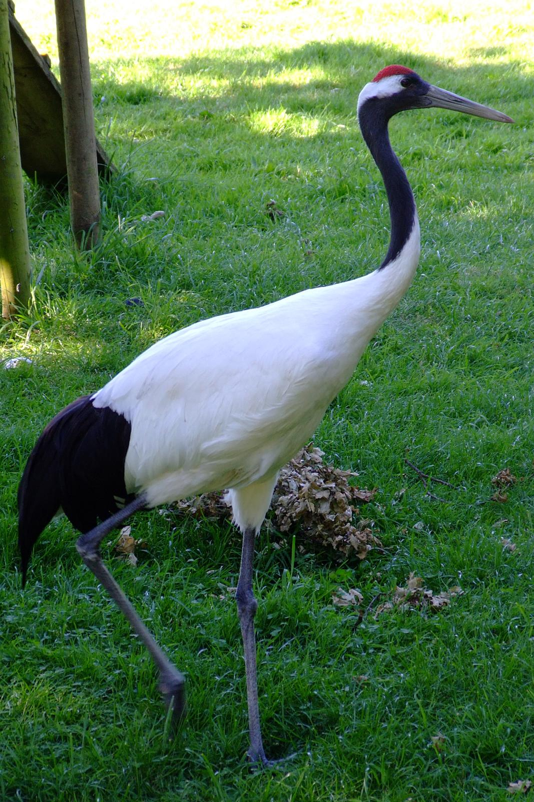
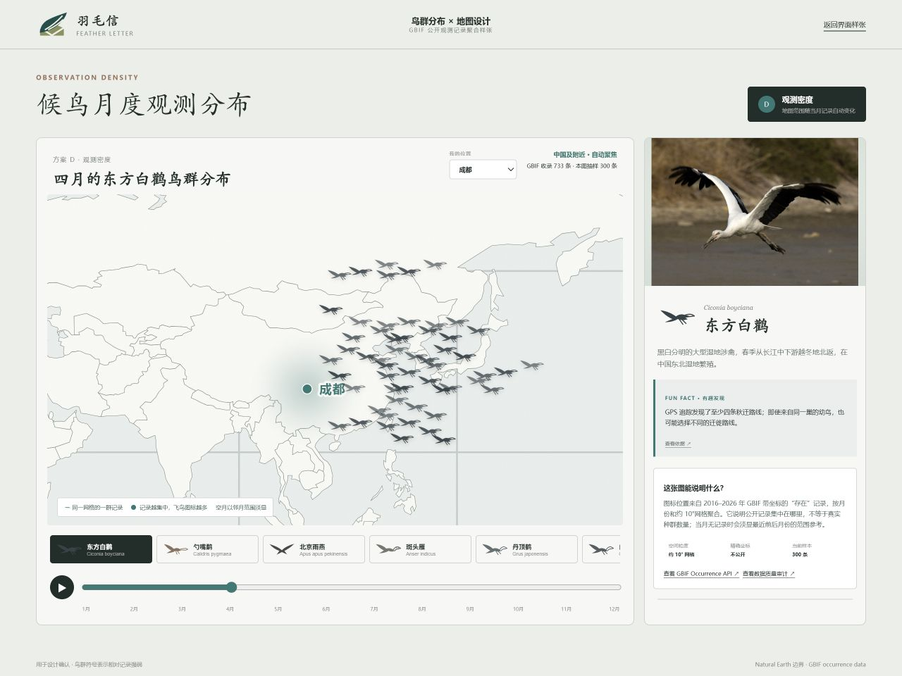
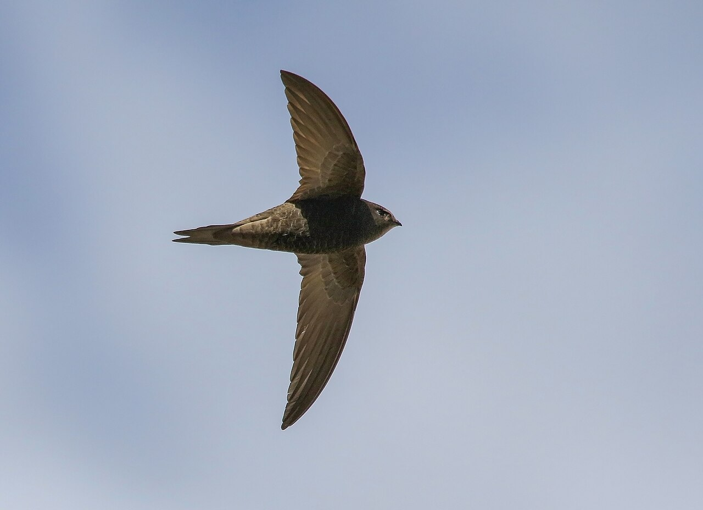
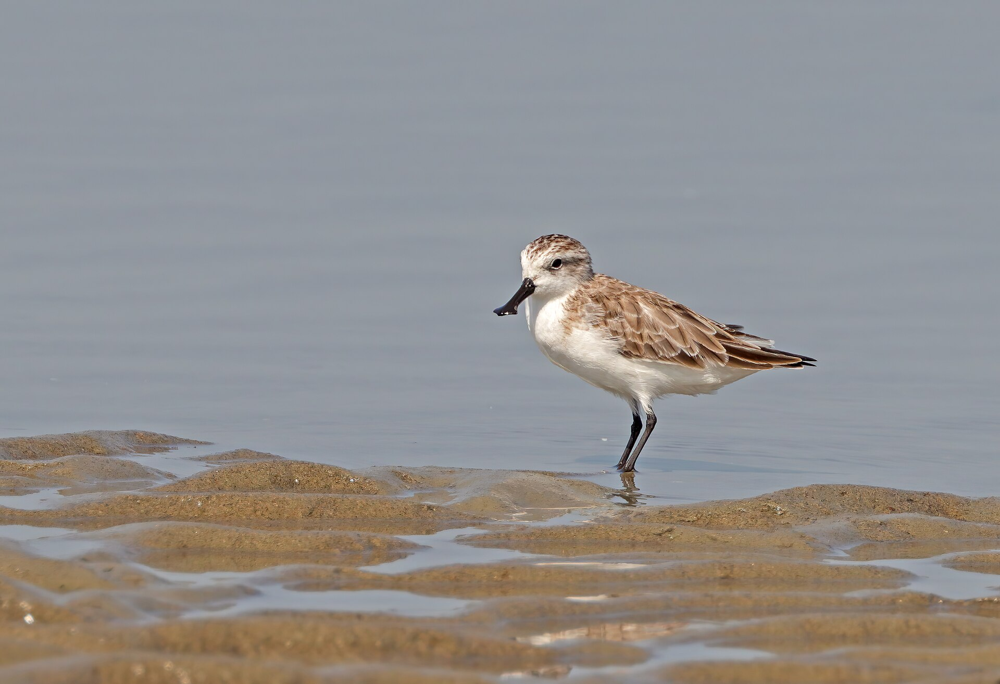

一年，不只是一条线
选择物种，滑动月份节点。地图范围会随记录移动，鸟群图标的疏密对应公开观测记录的相对强弱。
123456789101112
跟着月份 · 遇见候鸟
滑动十二个月份，看二十种与中国相关的代表性候鸟，大致飞到哪里、何时经过，又在哪里停留。

每一个月份，都有一幅正在变化的鸟群地图

选择物种，滑动月份节点。地图范围会随记录移动，鸟群图标的疏密对应公开观测记录的相对强弱。


地图基于 GBIF 公开观测记录的月份聚合，并使用 Natural Earth 边界。图标表示记录密度，不等同于真实种群数量，也不公开珍稀物种的精确位置。